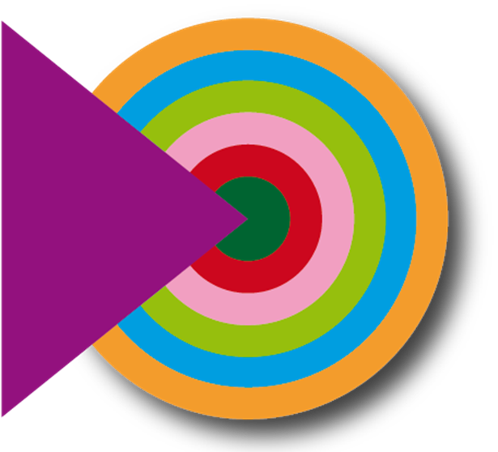
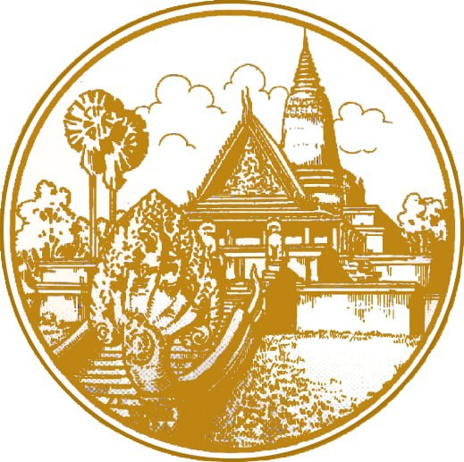

Producers:
Men Puthyrith,
Hor Sanara,
Michael Waibel, and
Martin Saram
អំពីការផលិតផែនទី៖
• រូបថតផ្កាយរណប ៖ Sentinel-2 ថតនៅថ្ងៃទី 31 ខែកក្កដា ឆ្នាំ 2026
• កម្មវិធីផលិតផែនទី ៖ Google Earth Engine ដោយប្រើវិធីសាស្ត្រ Supervised Classification តាមរយៈរូបមន្ត Random Forest
• ភាពជឿជាក់ ៖ មានកម្រិតភាពជាក់លាក់ 90% (អាចទទួលយកបាន)
• ការបង្ហាញផែនទីក្នុងកម្មវិធី ៖ QGIS2Web
Limitation: Sentinel-2’s 10–20 m spatial resolution may limit detection of small buildings, narrow roads, and fragmented urban features, while mixed pixels and spectral similarities can reduce urban land-cover classification accuracy.
ផលិតដោយ៖
លោក ម៉ែន ពុទ្ធីរិទ្ធ
មហាវិទ្យាល័យរៀបចំដែនដី និងរដ្ឋបាលដីធ្លី
ដឹកនាំដោយ៖
បណ្ឌិត ហោ សាណារ៉ា
មហាវិទ្យាល័យរៀបចំដែនដី និងរដ្ឋបាលដីធ្លី
ដឹកនាំដោយ៖
បណ្ឌិត Michael Waibel
គម្រោង Build4People
ដឹកនាំដោយ៖
លោក ម៉ាទីន សារ៉ាម
មន្ត្រីសម្របសម្រួលគម្រោង Build4People